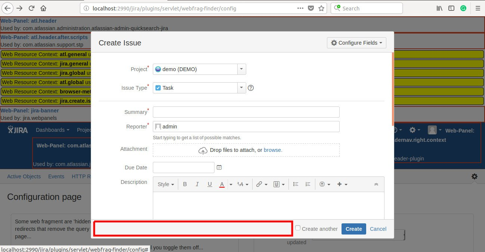

It's 4th article, and we didn't code yet. If you're eager to touch the code, then I'm going to disappoint you. You need to wait for the next one. This time I'm focusing on finding a right place for our plugin.
Our plugin will not be a separate application leaving in a limbo. It will be a part of the Jira interface, and we should aim to make it seamless, intuitive and straightforward. We need to choose how we'd like to integrate.
There are some rules you can follow to make it as painless as possible.
Cloud and Server Jira Plugin
If you would like to make both cloud and server plugins, then you probably want to make user experience similar. The cloud platform is more limited than the server, so you should start with the cloud API first and see what's possible and what's not. It is also a good advise to develop cloud plugin first. You don't want to end up with a standalone plugin which you can't port. I don't plan to create the cloud version, so I'll skip this point.
Discovering standard Jira integration points
It's a good practice to use standard integration points, available in JIRA API. If you use API, it will be easier to achieve compatibility between many versions. Also coexisting with other plugins will make you less headache. We're going to use Web Fragment Finder .
- Install the plugin
- After successful installation, WebFrags should be visible in the top menu. You may need to refresh the page. Click on the menu item.
- Switch to on all four switches. I'll reveal all the integration points and Jira contexts. Press save to confirm a new configuration.
Discovering nonstandard Jira integration points
I didn't find any standard section which I can use. At least I tried. An API is not limiting us. We can always integrate with JIRA the way we'd like to. It will be harder, and the result will be more fragile, but it's possible. I'm going to integrate Recurring Issues nonstandard way. If you are curious how to use standard Jira integration points, you can find it in the documentation. It will also cover it in one of the next articles.
I think the best place to create a "recurring issue" is in the same place we create a standard one. It'll be accessible and discoverable.
Next time we're going to find a way to insert our HTML into the Create Issue Dialog.